Comodatos y sus beneficios
 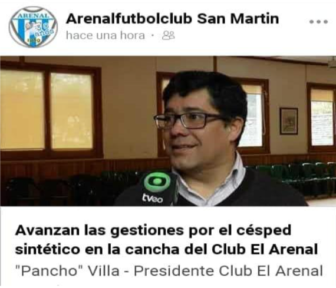
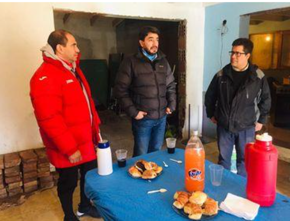
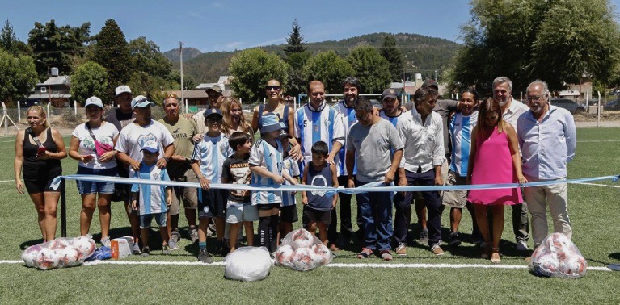
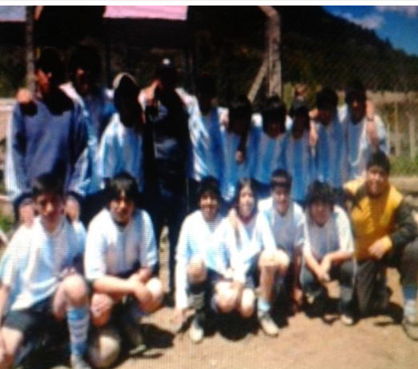
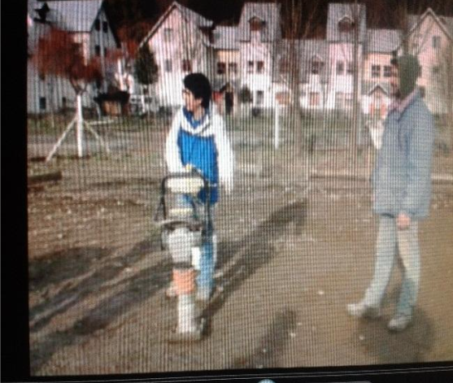
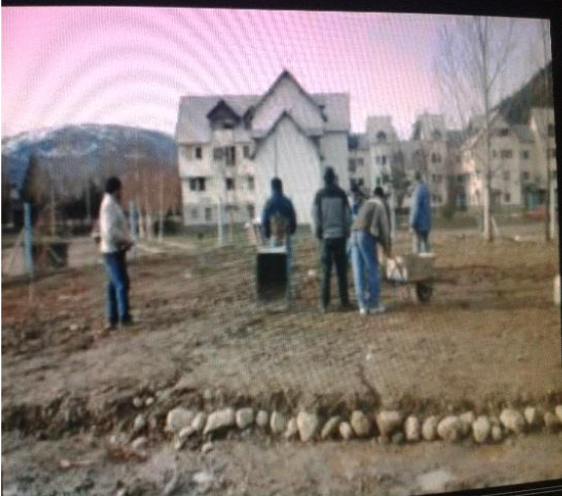
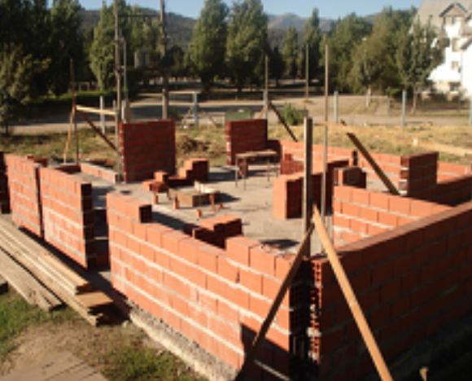
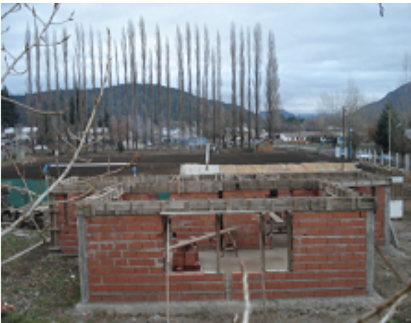
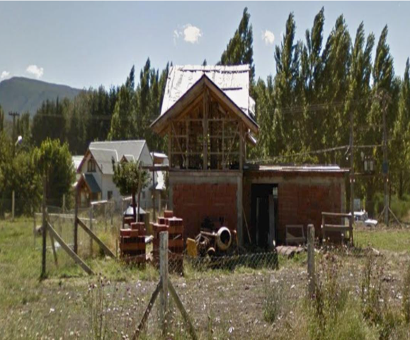
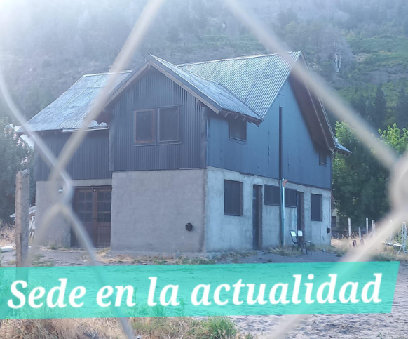
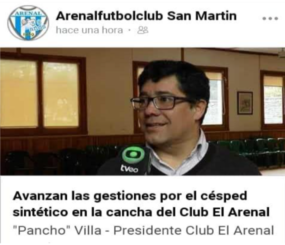
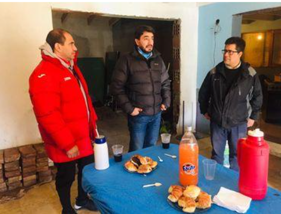
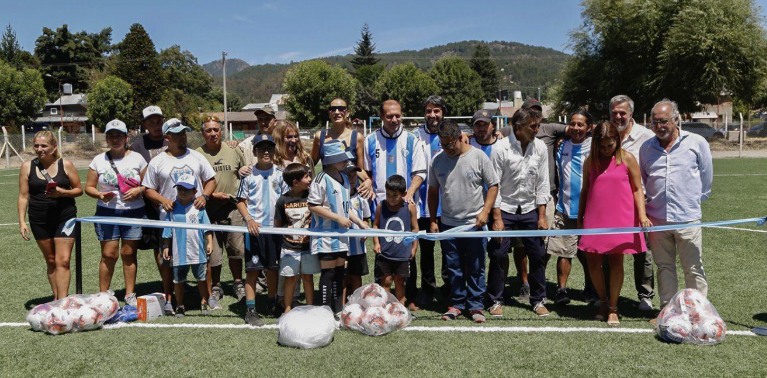
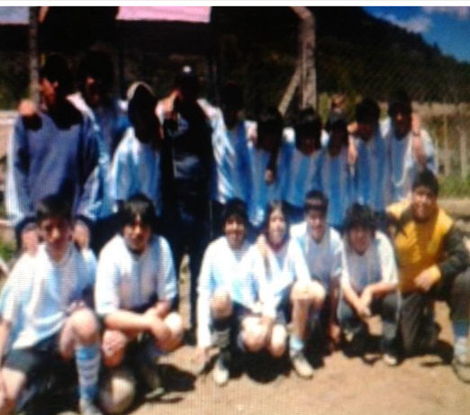
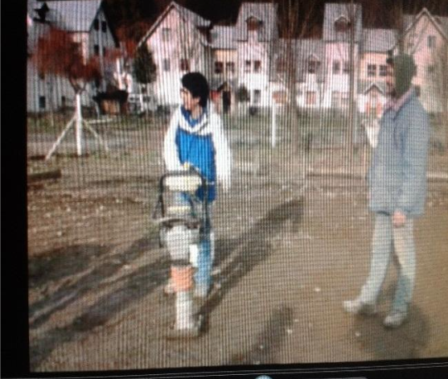
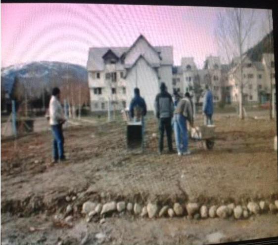
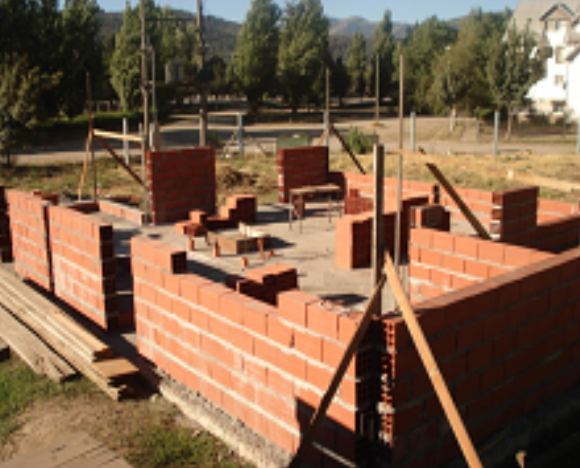
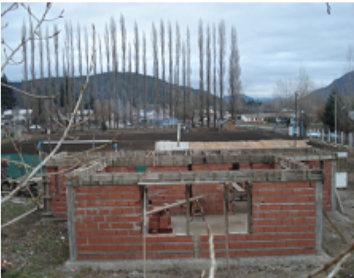
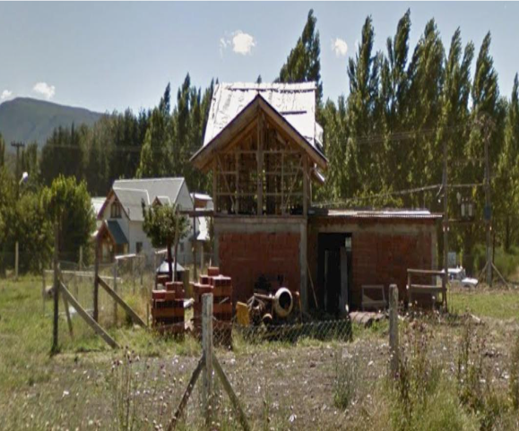
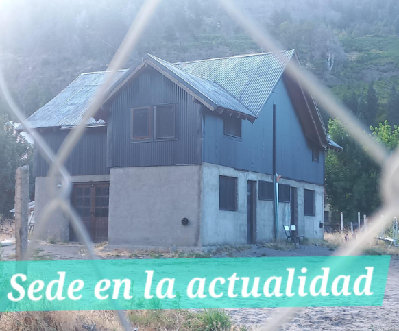
A partir de haber recibido la personería jurídica trabajamos para que nos dieran en comodato el terreno que usábamos desde siempre, en el 2004 conseguimos el esperado comodato, por 10 años, con el comodato en las manos, los socios del Club limpiamos el terreno, se delimito, compramos hierro y revuelto para hacer los postes de hormigón armado y se alambró, se presentaron los planos de la sede del Club. En el 2005, fueron aprobados los planos de la sede del club, con eventos como venta de empanadas y bonos contribución compramos gran parte de los materiales para hacer la platea, rellenamos el lugar donde estaría la sede.
En el mismo año pudimos contratar el servicio de electricidad a nombre del club, el costo de la platera era de $23000, la Señora Senadora Luz María Sapag nos dio un subsidio por $10000, ese día juagaban las cebollitas del arenal, ella dio el puntapié inicial. A los pocos meses juntamos lo que faltaba con varios eventos y armamos la platea, después se compraron materiales para seguir la mampostería y recibimos un subsidio de provincia de pesos 20.000, con ese dinero más los que juntamos en la participación del trabún llegamos hasta las vigas. Mientras construíamos la sede, en el predio se desarrollaba el campeonato infantil de la liga futbol de san Martin de los Andes. Empezando a entrenar a las 18.00 hs. después que los chicos salen de colegio y los entrenadores de sus respectivos trabajos, porque los entrenadores son los jugadores de las categorías mayores, reserva, primera y veteranos. A las 19,30 hs se nos oscurece entre los meses de abril y septiembre y para poder entrenar las categorías mayores, nos dispusimos a iluminar la cancha, compramos dos reflectores y los pusimos como para que alumbre la mitad de la cancha, después con la ayuda de los socios hicimos varias ventas de pollo, con ello pudimos compra 4 reflectores más, gestionamos por medio de Epen y el Intendente, Doc. Carlos Saloniti. 8 lámparas led, la verdad mejoro muchísimo la luminaria, hoy la cancha está ocupada hasta las 23:50 hs de lunes a viernes, entrenando todas las categorías del Club. El trabajo de zanjeo fue realizado por jugadores y jugadoras del Club
Otro servicio que pudimos incorporar fue el agua potable y cloacas, esencial para que los jugadores, socios y espectadores, también se puede higienizar las instalaciones que tenemos en la parte este de la cancha, unas oficinas donde guardamos la documentación, dos vestuarios, un salón de usos múltiples de 35 mts cuadrados. Y una sala de reunión en el primer piso. En noviembre del año 2015 se firmó un nuevo comodato por el termino de 25 años. 2016 se pudo colocar la cañería de gas natural, que tuvo que pasar por todo el predio ya que la red pasaba por la calle Damián Elorriaga. En junio del año 2019, se empezó a trabajar con el proyecto de una cancha de césped sintético en el Club de futbol el arenal1989, Junto al Intendente de la Ciudad de San Martin de los Andes Doc. Carlos Saloniti y el secretario de deporte Sebastián Lardit, hoy ya una realidad, es una intención política de nuestro Gobernador C.O. Omar Gutiérrez, el 04 de febrero 2023 se inauguró la cancha tan soñada, se va a cambio la realidad del futbol infantil y femenino de la ciudad.
Queremos continuar con el proyecto que consiste en los trabajos ya iniciados y seguir mejorando las instalaciones del club, para proporcionar un espacio ideal para la práctica del deporte y en las condiciones óptimas que todo niño/adolescente se merece para su mejor desarrollo.